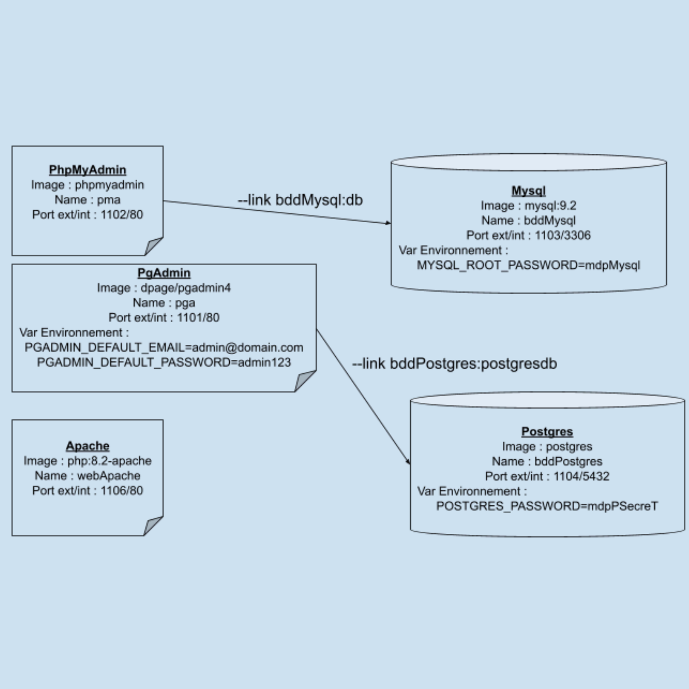

TP Virtualisation sous Docker
Ce TP portait sur la mise en place et la gestion d'une infrastructure de conteneurs Docker, intégrant plusieurs bases de données (MySQL et PostgreSQL) et un serveur web Apache. L'objectif était de créer une application web capable d'interagir avec ces différentes bases de données pour gérer un système de garage automobile.
Infrastructure et Configuration

L'infrastructure se compose de plusieurs conteneurs Docker interconnectés :
- Un conteneur MySQL avec phpMyAdmin pour la gestion visuelle
- Un conteneur PostgreSQL avec pgAdmin pour l'interface d'administration
- Un serveur web Apache avec PHP pour héberger l'application
Gestion des Bases de Données
MySQL - Base garageM
CREATE TABLE voitures (
immatriculation VARCHAR(20) PRIMARY KEY,
couleur VARCHAR(20),
km INT
);PostgreSQL - Base garageP
CREATE TABLE voitures (
immatriculation VARCHAR(20) PRIMARY KEY,
puissance INT,
prix DECIMAL(10, 2)
);
Application Web PHP
Affichage des Voitures
L'application permet d'afficher et de gérer les voitures stockées dans les deux bases de données simultanément. Le script PHP utilise PDO pour assurer une connexion sécurisée aux bases de données.
// Exemple de connexion sécurisée avec PDO
$options = [
PDO::ATTR_ERRMODE => PDO::ERRMODE_EXCEPTION,
PDO::ATTR_DEFAULT_FETCH_MODE => PDO::FETCH_ASSOC,
];
$pdoMysql = new PDO($mysqlDsn, $mysqlUser, $mysqlPass, $options);
$pdoPg = new PDO($pgDsn, $pgUser, $pgPass, $options);Fonctionnalités Implémentées
- Affichage des voitures des deux bases de données
- Ajout automatique de voitures avec données aléatoires
- Gestion des erreurs et sécurisation des connexions
- Interface web intuitive pour la visualisation des données
Liste des voitures dans la base MySQL
Ajout d'une nouvelle voiture
Compétences Développées
- Configuration et gestion de conteneurs Docker
- Administration de bases de données MySQL et PostgreSQL
- Développement PHP sécurisé avec PDO
- Mise en place d'une architecture multi-conteneurs